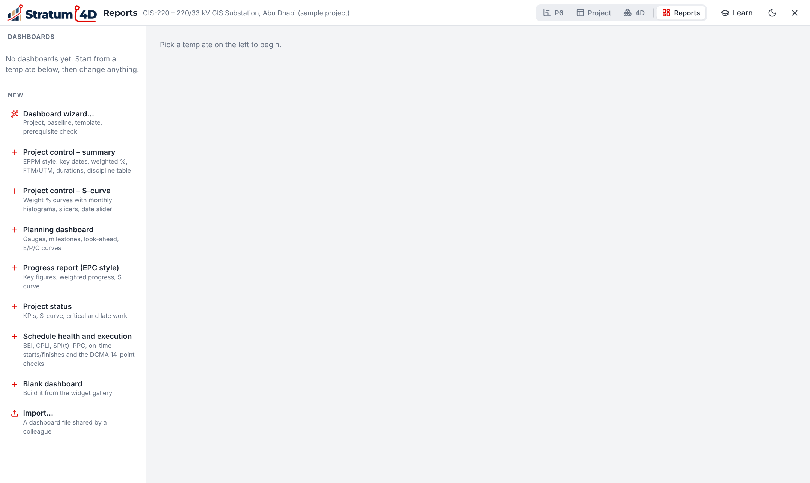
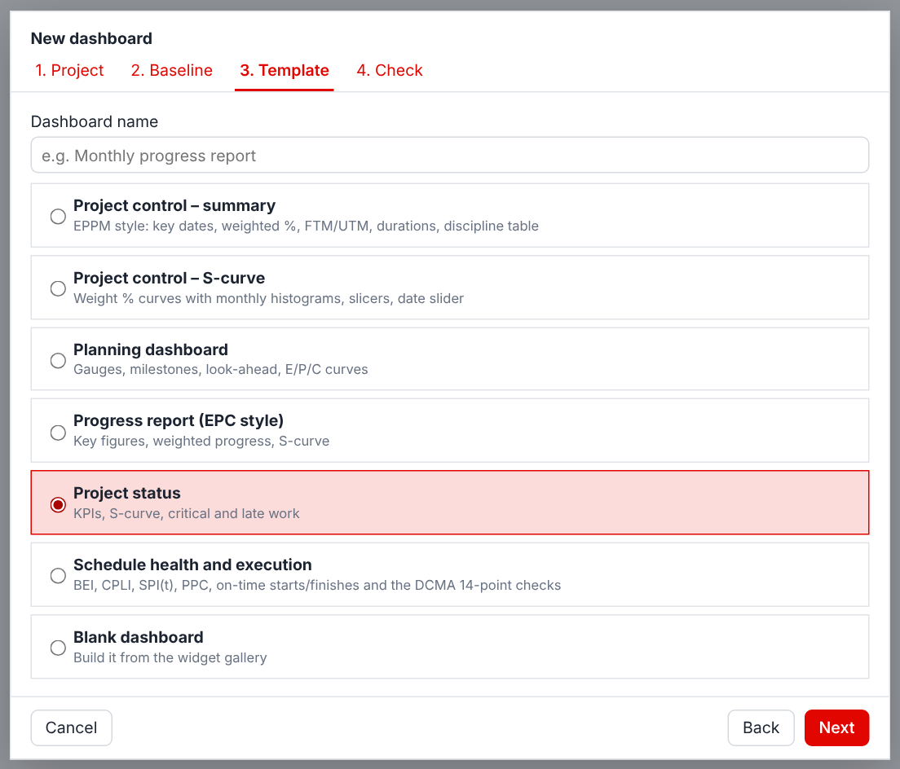
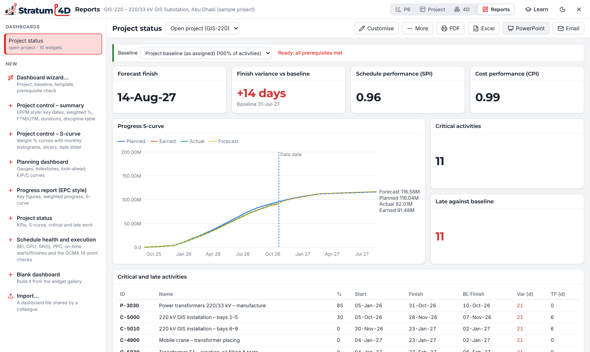
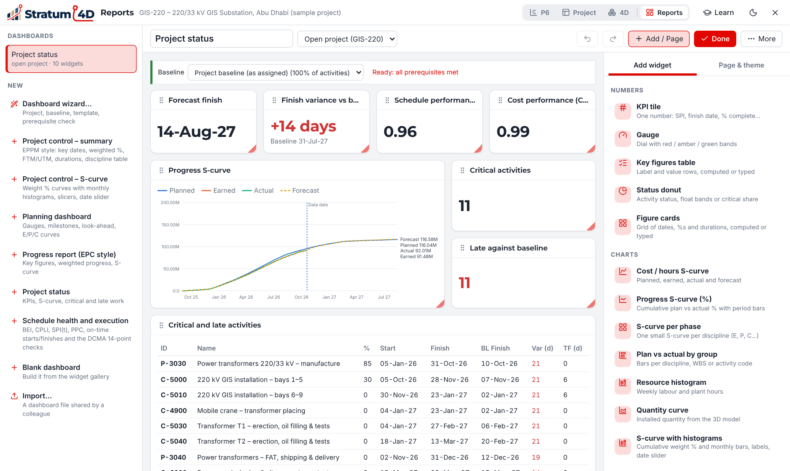

8Dashboards and reports
This chapter tells you how to make a dashboard, change it, and send it as a PDF, Excel or PowerPoint report.
Open the Reports view
Click Reports on the layout switch at the top of the window, or push Ctrl+Alt+4. In the P6 layout, you can also click Reports and Dashboards in the menu.
The left column shows your dashboards. Below them, under New, are the Dashboard wizard… and the templates.

| Template | Contents |
|---|---|
| Project control – summary | Key dates, weighted %, durations and a table by discipline |
| Project control – S-curve | Weight % curves with monthly bars, slicers and a date slider |
| Planning dashboard | Gauges, milestones, look-ahead and curves for each phase |
| Progress report (EPC style) | Key figures, weighted progress and S-curve |
| Project status | KPIs, S-curve, critical work and late work |
| Schedule health and execution | BEI, CPLI, SPI(t), PPC, starts and finishes on time, and the DCMA 14-point checks |
| Blank dashboard | No widgets. You add them from the widget gallery. |
Make a dashboard with the wizard
The wizard makes sure that the data is ready before it makes the dashboard. Figure 8-2 shows the steps.
- Open the project that you want to report on.
- Click Dashboard wizard….
- At Project, select the project. Click Next.
- At Baseline, select the baseline to compare with. Click Next.
- At Template, select a template, or Blank dashboard. Click Next.
- At Check, read the result of each check.Each check shows what to do if it does not pass.
- Click Create dashboard, or Create anyway.The dashboard opens, ready for changes.

The wizard does a check of the baseline, the data date, the calculation, the progress, the costs and the logic. If a check does not pass, the button changes to Create anyway. Then the widgets that compare with the baseline show Needs a baseline, not incorrect numbers.
Read a dashboard

- The bar at the top of the dashboard shows the Baseline and the result of the checks.
- The list next to the name selects the project that the dashboard shows.
- If the dashboard has slicers, click a value to filter all the widgets. To remove all filters, click the button to clear every slicer selection.
- Put the pointer on a chart to see the values.
Change a dashboard
- Click Customise.The panel on the right shows the Add widget and Page & theme tabs.
- To add a widget, click it in the Add widget tab. If the panel shows a widget, click Add / Page first.
- To move a widget, drag its handle at the top left.
- To change the size of a widget, drag its bottom right corner.
- To change the data of a widget, click the widget. Then change its settings in the panel.
- To change the header, the logo and the colors, use the Page & theme tab.
- Click Done.

Stratum 4D saves each change immediately. To go back one step, push Ctrl+Z.
To use a dashboard again
- More › Duplicate dashboard makes a copy.
- More › Save as template adds the dashboard to My templates.
- More › Export dashboard file (.json) makes a file for a different person. That person uses Import… to add it.
Make a report
| Click | Result |
|---|---|
| The print dialog. Select "Save as PDF" to make a PDF file. | |
| Excel | An Excel workbook with the data of each widget |
| PowerPoint | A presentation with a title slide and one slide for each chart or table. The charts and tables are PowerPoint charts and tables, so you can change them. |
| The Email reports panel |
Send reports by email on a schedule
The desktop application or Stratum Server can send a dashboard by email each day, week or month. The web application cannot do this. In the web application, make the PDF or the Excel file and send it yourself.
To set the mail server
- Open Settings.
- Click the Email tab.
- Type the data of your mail server. Your IT department can give you this data.
To add an email schedule
- Open the dashboard and click Email.
- Click + New email schedule.
- Type the Name and select the Project (reports need a saved project).
- In To (separate with ; or ,) and Cc, type the email addresses.
- Type the Subject and the Message. You can use
{project},{date}and{datadate}in the text. - Select Daily, Weekly or Monthly, and the time.
- Select PDF of the dashboard, Excel workbook or the two.
- Make sure that Enabled is selected. Click Save schedule.
Each schedule shows the time of the next send and the result of the last send. To send a report immediately, click send now on the schedule.